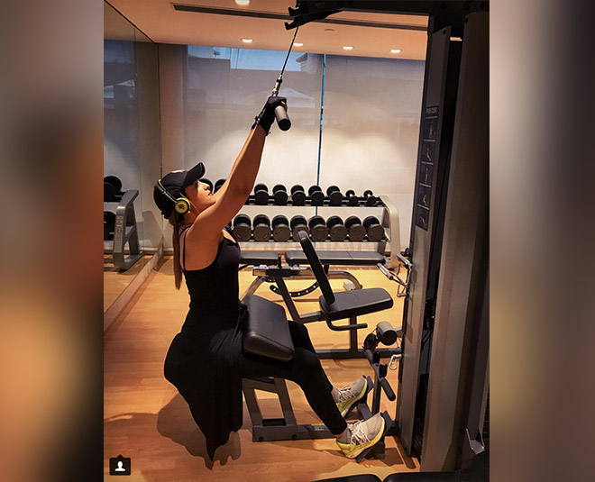
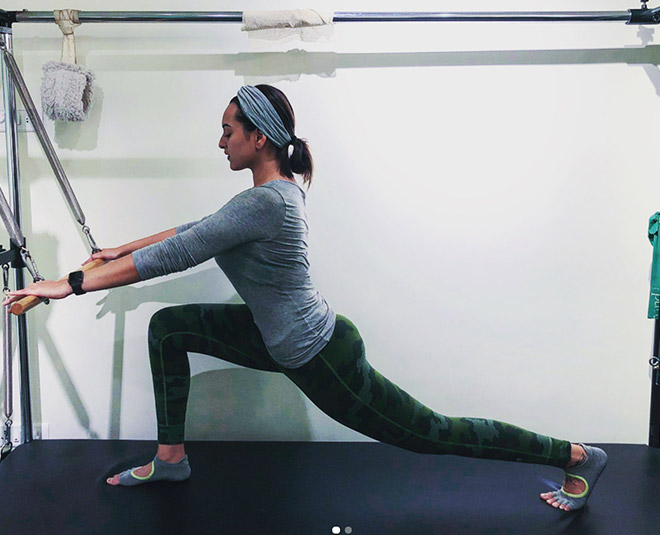
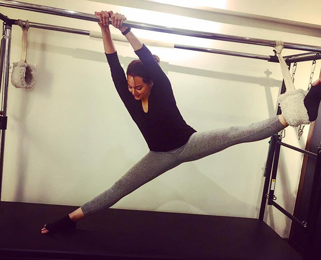
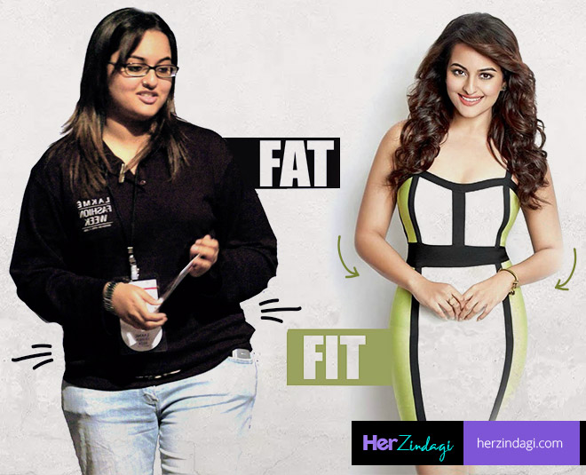

Jaicst

This blog is about top three most popular fit bollywood actress-
While there are a few celebrities, who motivated us with their weight-loss transformation, but the most inspiring among them is birthday girl Sonakshi Sinha. She, who used to weight around 90 kilos at the beginning of her inspirational transformation, shed almost 30 kg before making her debut in Bollywood. If you are too inspired by her fat-to-fit transformation and want to shed kilos, you are in the right place. Today, we tell you the super secrets behind Sinha’s fit body, from the diet she followed to the vigorous workout she did to go from a massive 90 kilos to a fitter 60-kilo actress! Scroll on to find out.
Sonakshi trains with celebrity trainer Namrata Purohit for pilates. This low impact flexibility workout is super effective when it comes to toning abdominal muscles. With endurance movements that are much slower than normal workouts, Pilates help you build muscular strength, improve your posture and drastically strengthen your core.
You probably already know that cardiovascular exercise is one of the best ways to lose weight. Sonakshi swears by crunches, Stairmaster, rowing machines, and climbers workout in order to stay fit. Apart from all these exercises, she also includes some cycling in her workout which helps reduce body fat and toned thighs. But that's not it. Cardio also makes your body flexible, relaxes your mind, and gives relief from depression. It also reduce your risk of heart attack, high cholesterol, high blood pressure, diabetes, and some forms of cancer.
Not only cardio and pilates, Sinha also lifts a lot of weights to stay fit. Weight training helps tone the muscles and strengthens them. It improves functional performance, as well as bone density, structure, and strength in postmenopausal women with low bone mass. It also boosts energy levels and improves your mood.
